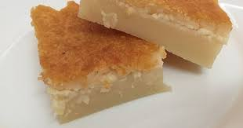

Pudim de padaria de Pontalina

Ingredientes
- 3 ovos
- 350 g de farinha de trigo
- 350 g de açúcar
- 75 g de coco ralado
- 1,250 l de leite
- 50 g de queijo ralado (opcional)
Modo de preparo
- Misturar bem todos os Ingredientes e dispor em uma fôrma (não é necessário untar; a massa fica bem líquida).
- Levar ao forno a 250º C por 45 a 55 minutos.
- Esfriar completamente e cortar em fatias retangulares.